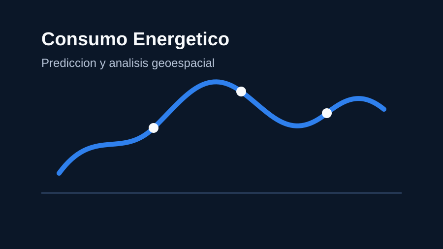
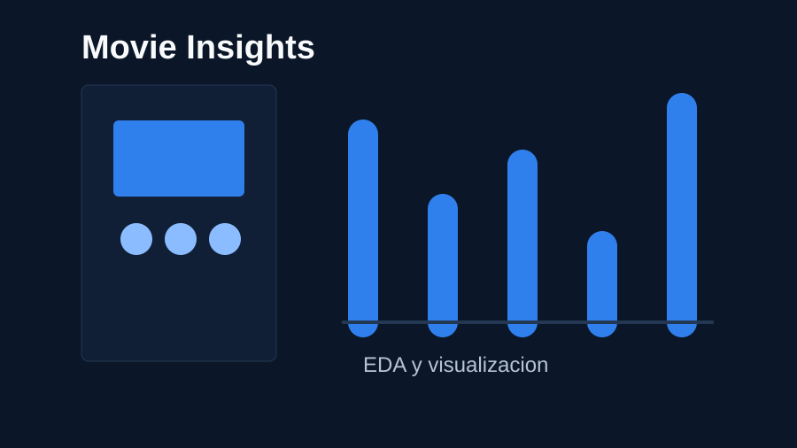

Portafolio profesional
Luis Diego Montero Vargas
Data Science Student | Data Analyst | SQL & Python
Estudiante de Ciencia de Datos con enfoque en análisis de datos, automatización, visualización de información y soluciones basadas en SQL, Python, Power BI y Machine Learning.
Áreas principales
- Big Data y analítica
- SQL Server y Oracle
- Python para datos
- Power BI y visualización
Sobre mí
Perfil orientado a datos, soporte y mejora continua
Soy estudiante de Big Data con experiencia en soporte técnico y atención al usuario, lo que me ha permitido desarrollar una visión práctica para entender necesidades, resolver problemas y comunicar soluciones de forma clara.
Me enfoco en proyectos relacionados con análisis de datos, SQL, Python, Power BI, procesos ETL, visualización de información y fundamentos de Machine Learning. Busco crear soluciones útiles, ordenadas y medibles que conviertan datos en información accionable.
Habilidades
Tecnologías y áreas de trabajo
Proyectos
Trabajos destacados


Movie Insights
Análisis exploratorio y dashboard interactivo para descubrir patrones en datos de películas usando programación orientada a objetos.
Python, POO, Pandas, Matplotlib, Seaborn, EDA
Experiencia y formación
Ruta académica y profesional
Estudiante de Big Data
Formación universitaria enfocada en procesamiento, análisis, visualización y gestión de datos.
Experiencia en soporte técnico
Atención a usuarios, diagnóstico de incidentes, documentación de casos y resolución de problemas tecnológicos.
Proyectos universitarios de análisis de datos
Desarrollo de ejercicios aplicados con SQL, Python, Power BI, dashboards, EDA y modelos predictivos.
Aprendizaje continuo en ciencia de datos y BI
Profundización en Machine Learning, visualización, automatización, buenas prácticas y comunicación de resultados.